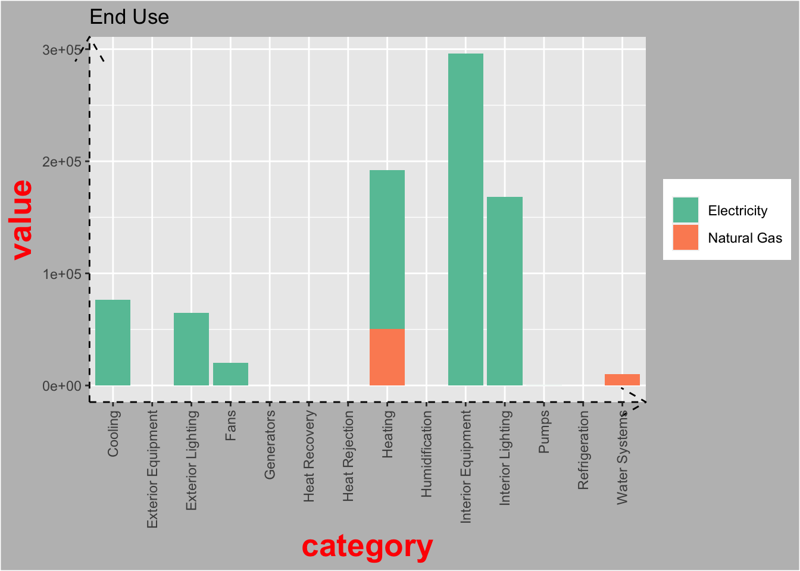
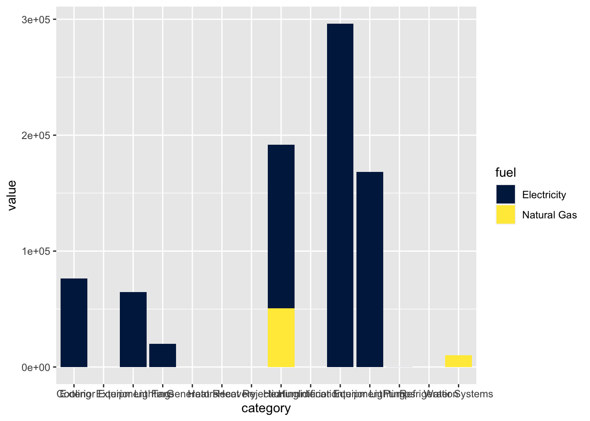
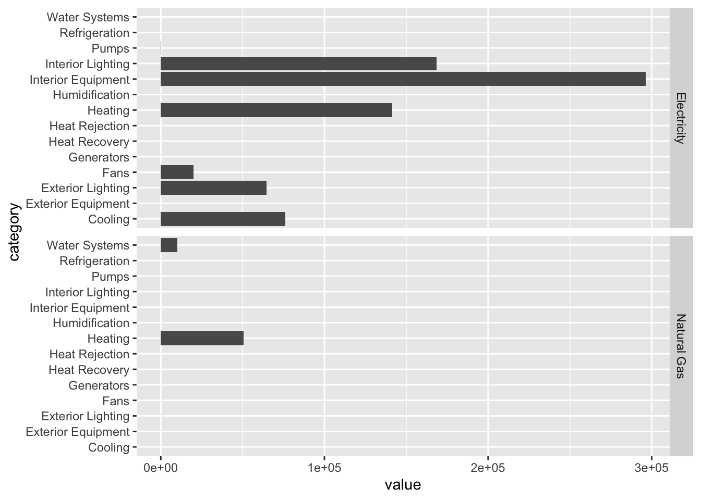

Chapter 12 Visualize
12.1 Prerequisites
In this chapter, you will use the eplusr package to interface with EnergyPlus via R, the tidyverse package to manipulate the simulation results, and the here package to specify relative file paths.
Additionally, we will introduce ggplot2, an input-tidy visualization package that is based on the the grammar of graphics [8]. We will also introduce RColorBrewer package that contains predefined color palettes that make it easy to pick the right one when creating graphics in R.
library(eplusr)
library(tidyverse)
library(here)
library(ggplot2)
library(RColorBrewer)In this chapter, you will also be working with the U.S. Department of Energy (DOE) Commercial Reference Building for medium office energy model [3] and the third and latest typical meteorological (TMY3) weather data for Chicago. You will first parse the IDf and EPW.
path_idf <- here("data", "idf", "RefBldgMediumOfficeNew2004_Chicago.idf")
model <- read_idf(path_idf)
path_epw <- here("data", "epw", "USA_IL_Chicago-OHare.Intl.AP.725300_TMY3.epw")
epw <- read_epw(path_epw)12.2 Colors
Choosing the right color scheme is an important aspect of data visualization because of the effects they might have on our relative visual perception of luminance. Fortunately, R has pre-defined color pallettes that make all this super easy. All you have to do is to select the appropriates ones. In this chapter, we will be using the pre-defined color palletes in the RColorBrewer package. In general, you will want to use palettes that are colorblind friendly.
display.brewer.all(colorblindFriendly = TRUE) In general, there are three types of color palettes: sequential, diverging, and qualitative.
In general, there are three types of color palettes: sequential, diverging, and qualitative.
When representing gradients (such as temperature data), you want to use sequential color palletes that are perceptually uniform as the color progresses from low to high.
display.brewer.all(type="seq", colorblindFriendly=TRUE)
You will want to use diverging color palletes that uses a neutral mid-point that diverges at perceptually equal steps to both ends of the data. An example is using the RdBu color pallette to represent temperature data that diverges between cold and hot.
display.brewer.all(type="div", colorblindFriendly=TRUE)
You will want to map categorical variables to qualitative color palettes that are perceptually uniform and not have any variables standing out perceptually due to it’s color. For instance, when visualizing the energy usage intensity of different buildings, you would want the colors used to represent each building to be easily distinguishable but at the same time not have one stand out from another even though they are numerically equivalent.
display.brewer.all(type="qual", colorblindFriendly=TRUE) 
12.3 ggplot()
12.3.1 Functions and Components
All plots created by ggplot2 begins with a ggplot() function that initializes a ggplot plot object that can be used to specify how variables in the data are mapped to the “aesthetics” of the visualization. The function has two key arguements. The first argument data is the data frame that will be used for the plot. The second argument mapping is used to specify how variables in the data are mapped to the “aesthetics” of the visualization. The function aes() is a quoting function (i.e., the inputs are evaluated in the context of the data). This means that you can name the variables of the data frame directly within the aes() function.
ggplot(data = <DATA>, mapping = aes(<x, y, ...>))You can then specify the graph by adding one or more of the following components with +
- A layer that comprises of geometric objects or geom, statistical transformation or stat, and position adjustments. Typically, a layer will be created using a
geom_<function>() - scales that map data values to visual properties such as color, fill, shape, and size.
- A coordinate system that specifies how the coordinates of the data maps to the plot. Typically, Cartesian coordinates are used. However, other coordinate systems includes polar coordinates and map projections.
- facets that divides the data into subsets based on one or more discrete variables. These subsets of data are then displayed as subplots on the plot.
- A theme that can be used to customize the non-data components of the plot such as titles, labels, fonts, background, gridlines, and legends.
ggplot(data = <DATA>, mapping = aes(<x, y, ...>)) +
<GEOM_FUNCTION>(stat = <STAT>, position = <POSITION>) +
<COORD_FUNCTION>(...) +
<SCALE_FUNCTION>(...) +
<FACET_FUNCTION)(...) +
<THEME_FUNCTION>(...)You will see the use of ggplot() and the above mentioned components more concretely as we go through the visualization recipes in the subsequent sections.
12.3.2 A simple example
Bar graphs are a common way to visualize building simulation end use data. In this section, we will illustrate the use of ggplot and its various components using using the report_end_use data frame that was created in the preceding section.
report_end_use <- report %>%
filter(table_name == "End Uses",
grepl("Electricity|Natural Gas", column_name, ignore.case = TRUE),
!grepl("total", row_name, ignore.case = TRUE)) %>%
mutate(value = as.numeric(value)*277.778,
units = "kWh") %>%
select(row_name, column_name, units, value) %>%
rename(category = row_name, fuel = column_name) %>%
arrange(desc(value)) %>%
drop_na()You can create bar graphs by adding geom_bar(). By default, stat = bin in geom_bar() which gives the count in each x. However, when the data contains y values, you would want to use stat = "identity".
ggplot(data = report_end_use, aes(x = category, y = value, fill = fuel)) +
geom_bar(stat="identity")
By default, the bar charts would be stacked. In this scenario, we only have two groups of fuel, electricity and natural gas. However, when there are many groups, stacked bar charts can be difficult to visualize. You can place them side by side instead using position = position_dodge().
ggplot(data = report_end_use, aes(x = category, y = value, fill = fuel)) +
geom_bar(stat="identity", position = position_dodge())
You can use scale to change the fill of the bar chart. The scale_*_brewer() functions provides an easy way to specify palettes from the rcolorbrewer package in ggplot.
ggplot(data = report_end_use, aes(x = category, y = value, fill = fuel)) +
geom_bar(stat="identity") +
scale_fill_brewer(palette = "Set2") 
You can flip how the data coordinates maps to plot to get horizontal bar plots with coord_filp().
ggplot(data = report_end_use, aes(x = category, y = value, fill = fuel)) +
geom_bar(stat="identity", position = position_dodge()) +
scale_fill_brewer(palette = "Set2") +
coord_flip()
You can divide the plot into various facets by subsetting the plot based onone or more discrete variables. In this example, we divide the plot row wise based on fuel type using facet_grid().
ggplot(data = report_end_use, aes(x = category, y = value)) +
geom_bar(stat="identity", position = position_dodge()) +
coord_flip() +
facet_grid(rows = vars(fuel))
As you probably have noticed. The x-axis labels are not legible due to overlapping when plotting the data as vertical bar charts.
You can use theme() and element_text() to change how the x-axis labels appear. In this case we are rotating it counter-clockwise by 90 degrees (angle = 90), vertically center justify the text (vjust = 0.5), and horizontally right justify the text (hjust = 1). For vjust and hjust, 0 and 1 refers to left and right justify respectively.
ggplot(data = report_end_use, aes(x = category, y = value, fill = fuel)) +
geom_bar(stat="identity") +
scale_fill_brewer(palette = "Set2") +
theme(axis.text.x = element_text(angle = 90, vjust = 0.5, hjust=1))
You can also use theme() together with various element_* functions to control elements of the plot title, legend, axis labels, borders, background, etc. You can find out more about the possible arguments to each element_function() by typing ?margin into your console. element_* functions are used with theme() to specify the non-data components of the plot. There are four element functions and they are:
element_blank(): to assign a blankelement_rect(): for specifying borders and backgroundelement_line(): for specifying lineselement_text(): for specifying text
ggplot(data = report_end_use, aes(x = category, y = value, fill = fuel)) +
geom_bar(stat="identity") +
scale_fill_brewer(palette = "Set2") +
ggtitle("End Use") +
theme(axis.text.x = element_text(angle = 90, vjust = 0.5, hjust=1),
axis.title = element_text(face = "bold",
colour = "red",
size = 20),
axis.line = element_line(linetype = "dashed",
arrow = arrow()),
plot.background = element_rect(fill = "grey"),
legend.title = element_blank() # remove legend title
)